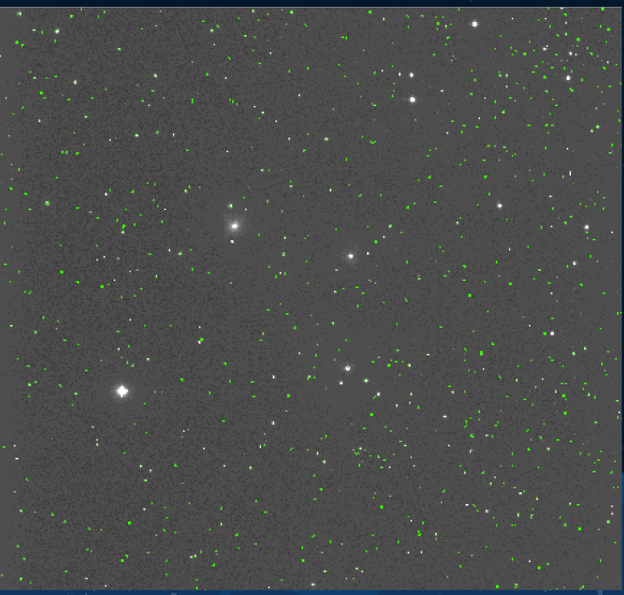
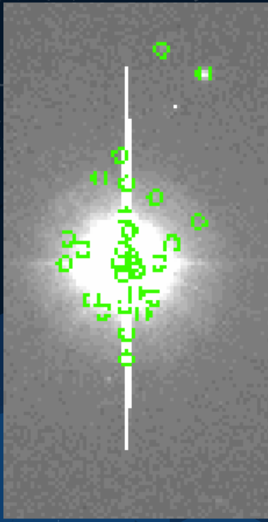
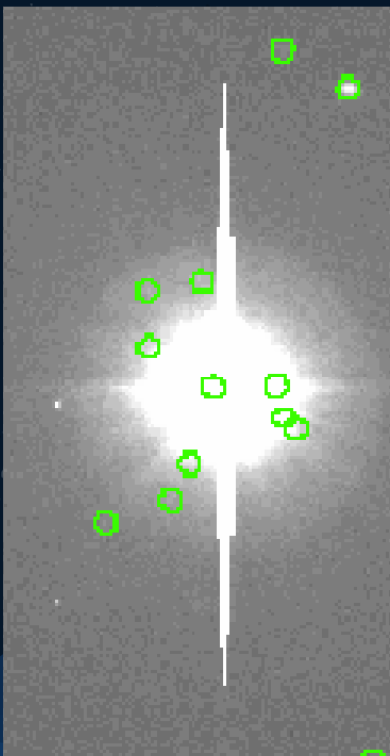
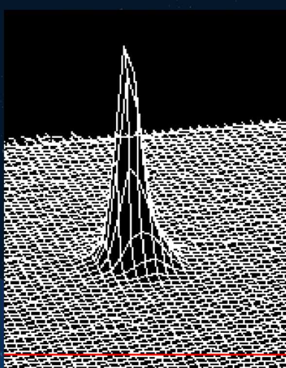
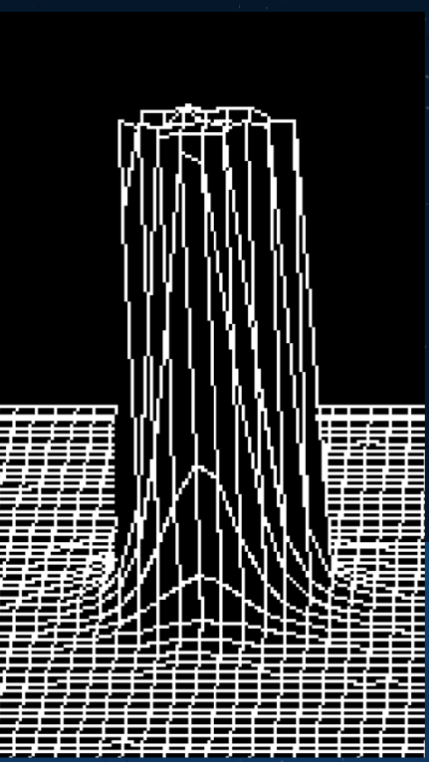
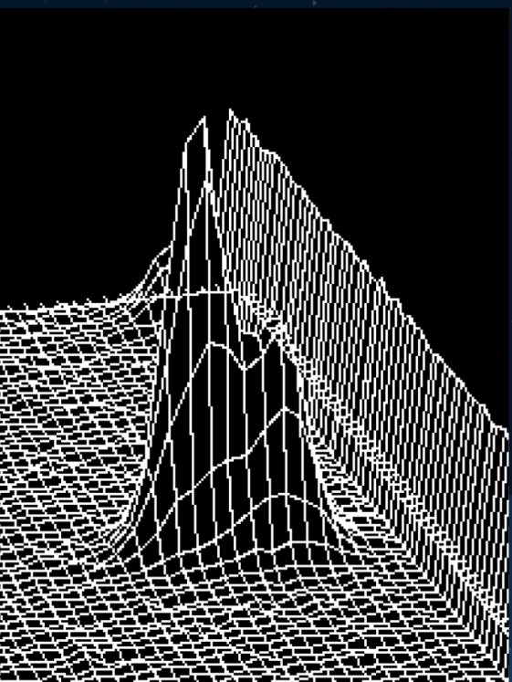
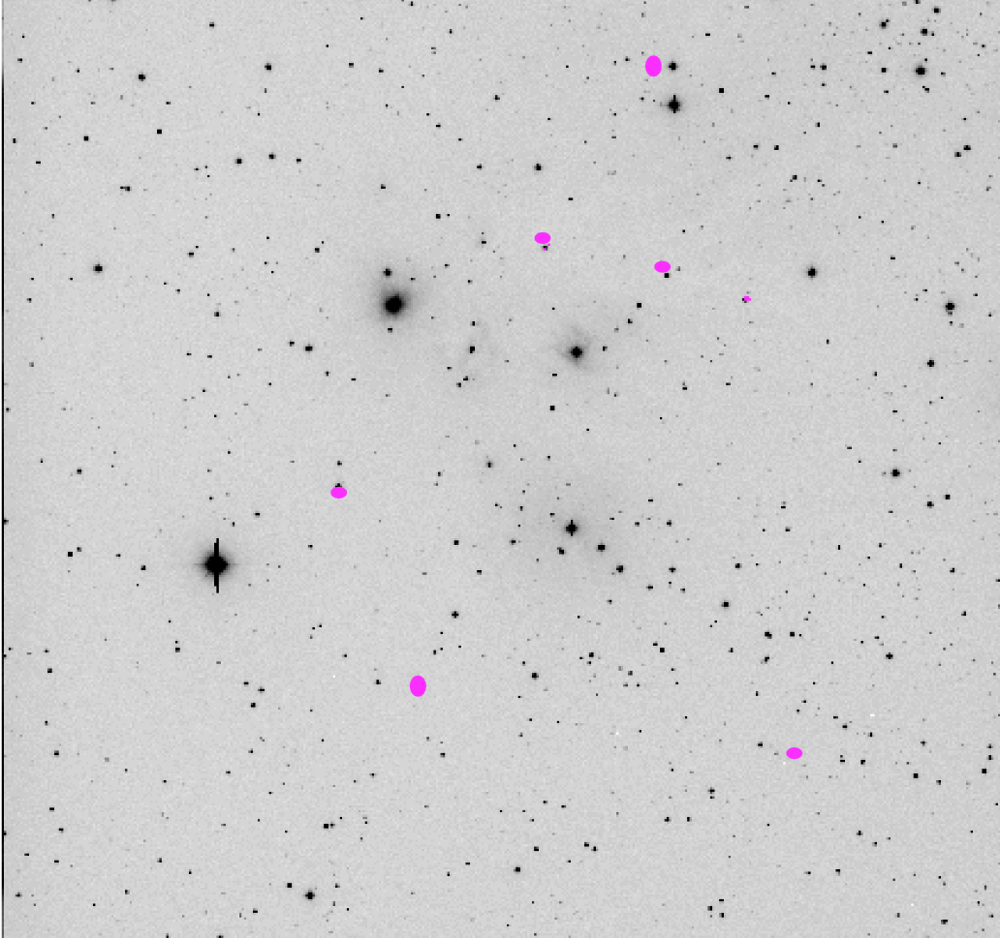

<!doctype html>
<html lang="en">

  <!doctype html>
<html lang="en">

<head>
 <meta charset="utf-8">
  <title> Data </title>
  <link rel="icon" type="image/png" href="images/colorcompos.png">
  <meta name="description" content="Hello World">
  <meta name="author" content="Sanya Arora">
  <meta name="description" content="A description of the search for extraterrestrial life">

  <meta content="text/html" http-equiv="Content-type" />
  <meta content="width=device-width, initial-scale=1" name="viewport" />

      <link href="https://fonts.googleapis.com/css2?family=Roboto&family=Ubuntu:wght@700&display=swap" rel="stylesheet">
  <link rel="stylesheet" href="https://maxcdn.bootstrapcdn.com/bootstrap/3.4.1/css/bootstrap.min.css">

   <script src="https://ajax.googleapis.com/ajax/libs/jquery/3.5.1/jquery.min.js"></script>
  <script src="https://maxcdn.bootstrapcdn.com/bootstrap/3.4.1/js/bootstrap.min.js"></script>
    <link rel="stylesheet" href="css/styles.css">

</head>


</html>
  <!doctype html>
<html lang="en">


<body>

	<nav class="navbar navbar-default">
	  <div class="container-fluid">
      <div class="navbar-header">
	      <a> </a>
	     </div>
	    <ul class="nav navbar-nav">
	    	<li> <a href="#" style="color: #2e2a65; font-family: 'Ubuntu', sans-serif; font-size:20px"> ASTR 230 Final Project</a> </li>
	      <li><a href ="index.html"> Home </a></li>
	      <li> <a href ="about.html"> About Me</a></li>
	      <li class="dropdown">
	        <a class="dropdown-toggle" data-toggle="dropdown" href="#">Project Info
	        <span class="caret"></span></a>
	        <ul class="dropdown-menu">


            <li><a href=background.html>Background and Motivation</a></li>

            <li><a href=data.html> Data Collection Methods </a></li>

            <li><a href=results.html>Results and Conclusions</a></li>

            <li><a href=ref.html>References</a></li>


	        </ul>
	      </li>
	    </ul>
	  </div>
	</nav>


</body>
</html>

<body>

  <h2> Data Collection and Methods </h2>
      <div class = "container-fluid">
        <div class ="col-lg-12">
          <div class="jumbotron vertical-center" style="background-color: #f2e6dc">


            <p class="text"> I took images for this project using the McDonald Observatory in west Texas. Professor Patrick Hartigan acted as my telescope operator, allowing me to
              gain access to the telescope from the comfort of my university. I imaged the same region (radius 23") of the Mon R2 Nebula over the course of 3 nights, obtaining 24
              images total. I took images in 3 different filters, V, R and I. I varied exposure times, obtaining around 3 images with 5-30 second exposures and around 4 images
              with 180 second exposures for each filter. This variation allowed me to study bright stars as well as faint stars. <br> </p>

            <p class="text">  To analyze my data, the first step was flatfielding the images, subtracting bias, and trimming the images using CCDproc on IRAF. I them perfomed bulk
              photometry on each images using IRAF's DAOphot. To use DAOphot, I first obtained the mean FWHM of each star profile and the mean standard deviation of the sky background
              using imexam. I used those values to decide what aperture size and sky annulus radius to use in my photometry. After setting all my parameters, I ran DAOfind to find the coordinates
              of each star in the field of view. The output from daofind is shown below.
             <br> </p>

             <figure>
                 </img>
               <figcaption class="text"> The output from DAOfind. All the coordinates found with DAOfind are shown in green. </figcaption>
             </figure>

             <p class="text"> Unfortunately, DAOfind often found objects that were not stars, such as hot pixels, cosmic rays, and very bright stars. I found that varying some of the
               limits in DAOfind helped reduce this effect. Specifically, limitting the roundness paramater helped get rid of some of the non-star coordinates. The images shown below
               are of a bright star in my field, in which DAOfind marked down many coordinates for "stars", that are not, in reality, actual stars. The first image is with the roundness
               maximum at 1, and the second image has the roundness maximum at .5. As is clearly visible, setting a lower roundess limit helps. Even after varying the paramters, I
               still had to spend a lot of time panning around every image I performed DAOfind on to delete all the coordinates that weren't stars.
              <br> </p>

              <figure>
                  </img>
                  </img>
                <figcaption class="text"> A bright star after DAOfind, with DAOfind roundness set to below 1 (left) and below .5 (right). </figcaption>
              </figure>


              <p class="text">
                After getting the coordinates of each star, I perfomed aperture photometry on all the stars in the coordinate list using the aperutre parameters
                discussed above. Using the aperture photometry output, I ran IRAF's pstselect to find ideal PSF (point spread function) candidate stars. Since I found that the
                PSF for each image varied with location, I used a PSF of order 2, so it changed for different locations on the image. Since my PSF order was so high, I had to use
                a lot of PSF candidate stars to fit the PSF function, usually 150 stars. After running pstselect, I ran psf to filter out the bad psf candidate stars. I rejected
                all stars that were saturated or were not isolated. Examples of acceptances and rejections are shown below.
                 <br> </p>

                 <figure>
                     </img>
                     </img>
                     </img>
                   <figcaption class="text"> psf fitting to ideal PSF candidates. Left image is accepted since it is unsaturated and isolated. Middle and right images are rejected. </figcaption>
                 </figure>

                 <p class="text">
                   After finding a best fit function for the PSF candidate stars, I ran IRAF's allstar to use the PSF to gather magnitudes for each star. I then compared the magnitudes
                   measured for each image to known magnitudes of standard stars in the field (shown below). Since the images have different exposure times, the magnitudes measured for
                   each image varies significantly. However the relative magnitudes for all the stars in an image should remain the same. For all six standard stars, I subtracted the known magnitude from the magnitude measured in IRAF
                   to find the shift in magnitude for that image. Since the stars should have the same relative magnitude, that shift, known as a "zero point offset", should be the same for all stars in
                   any image. I therefore averaged the zero point offset for all the standard stars and subtracted that average from every measured magnitude. After that, I could accurately compare
                   the masured magnitudes for different images.
                  <br> </p>

                  <figure>
                      </img>
                    <figcaption class="text"> standard stars in my field of view are highlighted in purple. </figcaption>
                  </figure>

                  <p class="text">
                    To compare magnitudes form different images, I had to shift all the coordinates of stars in each image to correct for the telescope drift. I found the coordinate shifts for each image by displaying the images in ds9,
                    and subtracted those shifts so that the coordinates were the same across all the images. I then ran the magnitudes through a python program I wrote to get all the magnitudes measured for each star in each filter. I then
                    took the median of those magnitudes to obtain the median measured magntiude for each star/filter. The standard devation of the list I took the median of was the error in the magnitude measurement.
                   <br> </p>
      </div>
    </div>
  </div>

<footer>
<html>


</html>
</footer>
</body>

</html>
